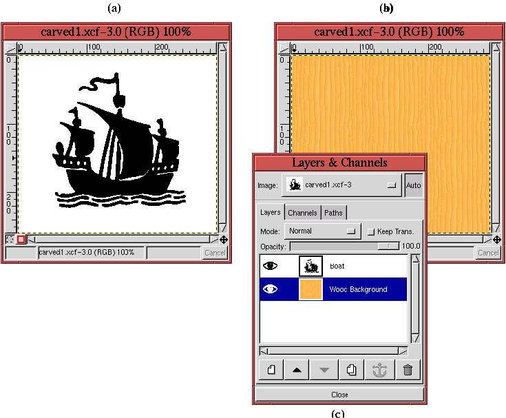
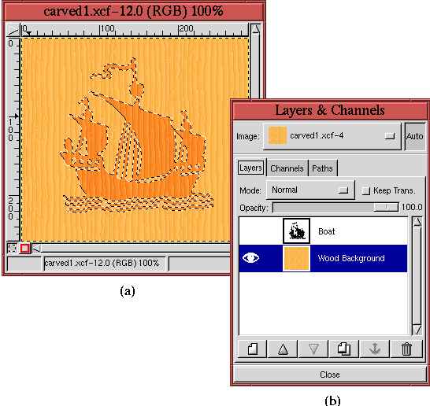
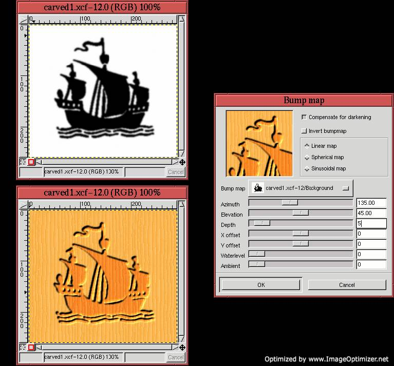
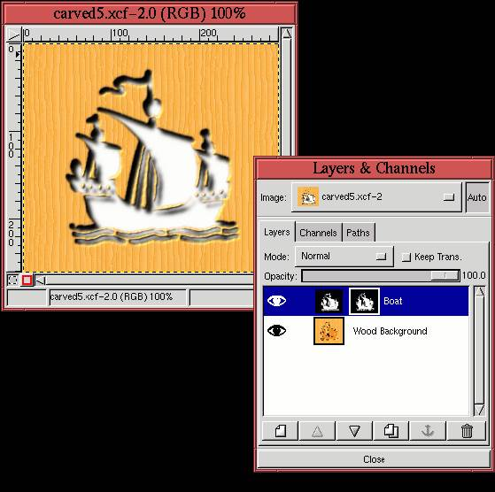
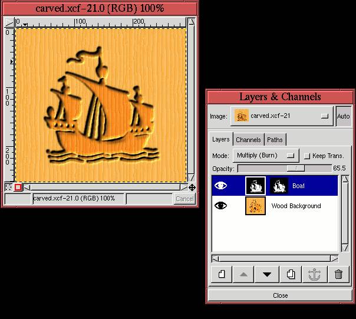

Next: 8.7 Rendering Project III:
Up: 8. Rendering Techniques
Previous: 8.5 Rendering Project I:
8.6 Rendering Project II: A Carved Stencil
This project describes a rendering effect that looks like carving into
wood. It makes use of bumpmapping and shadows.
The technique creates the carved effect using two layers.
Figure 8.29(a)
Figure 8.29:
The Two Layers Used to Create the Carved Rendering Effect
|  |
shows the first layer, a bit-mapped image of a boat.
Figure 8.29(b) shows the second layer, a
background inserted under the bitmap and filled, using the Bucket
Fill tool, with a wood pattern from the Pattern Selection
dialog. The visibility of the boat layer has been toggled off so that
the pattern can be seen. Figure 8.29(c)
illustrates the disposition of the two layers in the Layers dialog.
The first step in creating the carved effect is to obtain a selection
of the boat's outline. Since the bitmap of the boat consists of only
two colors, black and white, this is most easily done with the By
Color selection tool found in the Image:Select menu (see
Section 3.3.11). The resulting selection is used to create
an inset for the carved effect.
What is an inset? It is just the Wood Background layer darkened
slightly within the perimeter of the boat selection. This helps
create the illusion that this part of the image is recessed, or inset,
into the wood. Figure 8.30(a)
Figure 8.30:
Creating an Inset
|  |
shows the Marching Ants of the selection. The selection is seen
floating over the Wood Background layer because the Eye icon in the
Boat layer has been toggled off as shown in
Figure 8.30(b). Notice that the color of the
wood seems a little darker inside the selection. This darkening was
created by sliding the middle Input Slider control of the Levels
tool slightly to the right in the Value channel. After this step, the
selection is canceled by typing C-S-a in the image window.
The next step is to apply the Bump map
filter to the Wood Background layer using the bitmap of the Boat layer
as the embossing map. Before doing this, the bitmap of the boat is
blurred slightly because it improves the effect of the bumpmapping.
Figure 8.31(a)
Figure 8.31:
Creating the Carved Effect Using Bump map
|  |
shows the result of applying Gaussian Blur
(IIR) with a radius of 3 pixels to
the bitmap of the Boat layer, and Figure 8.31(b)
shows the Bump map dialog. As already stated, the bitmap of the
Boat layer has been chosen as the embossing map. The other Bump
map filter parameters are as shown in
Figure 8.31(b). Note that the Compensate for
darkening checkbox has been toggled on. The result of the Bump
map filter is shown in Figure 8.31(c).
At this point, the result shown in Figure 8.31(c)
already looks carved. However, the effect can be accentuated by
making clever use of a punchout. The idea is that the perimeter of
the carving should cast a punchout-like shadow onto the inset. To
achieve the effect, the colors of the Boat layer need to be inverted,
the layer must be copied into its own layer mask, and the layer must be
blurred and offset. The following list summarizes these steps:
- 1.
- Invert the colors of the Boat layer using Invert from the Image:Image/Colors menu.
- 2.
- Copy the Boat layer to the default buffer by typing C-c in the image
window.
- 3.
- Create a layer mask for the Boat layer.
- 4.
- Paste the contents of the default buffer by typing C-v in
the image window.
- 5.
- Anchor the resulting floating selection into the layer mask by
clicking on the Anchor button in the Layers dialog.
- 6.
- Make the Boat layer active by clicking on its thumbnail in the Layers
dialog.
- 7.
- Blur and offset the Boat layer using Gaussian Blur (IIR) with a
radius of 5, and Offset the layer by 5 in
X and Y.
These steps produce the image shown in Figure 8.32(a).
Figure 8.32:
Making the Punchout Effect
|  |
Figure 8.32(b) shows the associated Layers
dialog.
Notice that the creation of the punchout has turned the inset white.
To recover the dark colored wood of the inset the Boat layer is made
active and the Multiply mode is selected from the Mode menu in
the Layers dialog. As a final finesse, the shadow from the punchout
is made a bit more diffuse by setting the Opacity slider, in the
Layers dialog, to 65%. The final carved result is shown in
Figure 8.33(a).
Figure 8.33:
Using the Multiply Mode and the Opacity Slider to
Obtain the Final Carved Effect
|  |
Figure 8.33(b) shows the associated Layers
dialog.
Next: 8.7 Rendering Project III:
Up: 8. Rendering Techniques
Previous: 8.5 Rendering Project I:
©2000 Gimp-Savvy.com